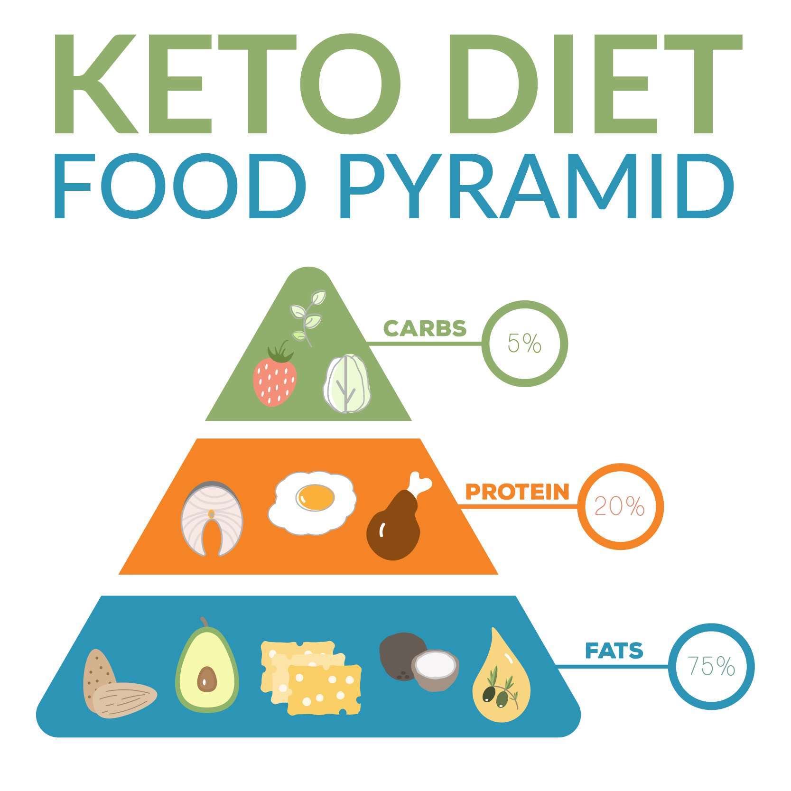
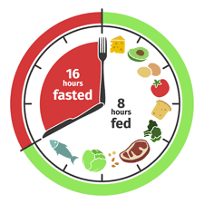
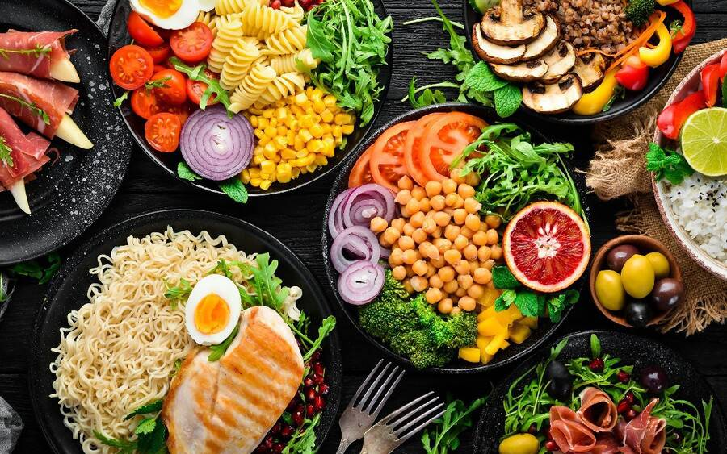

Choose a diet that fits your mind set!
chosing a diet that works for you is the secret of a healthy life style. There are plenty of diets out there and all will
prove effective to loosing excess wieght, but the secret is that you dont want something that will shed off wieght on a short term
the best diet is a lifetime diet that you could adapt to and adopt for years and most importanttly somwething you could commit to and enjoy
without feeling deprived the following are the best diets for long term lifestyle changes:
Keto:

for the past years the Keto diet have prove to be effective to adapt to and shown freat results. The challeging part of Keto
is giving up the carbs and focusing on healthy fats and protiens in recent years
alot of grocery stores have stocked up on keto products meaning you could find very low carbs Chips, sweets including ice creams.
According to DietDoctor.com: A “keto” or “ketogenic” diet is so named because it causes your body to produce small fuel molecules called “ketones.” This is an alternative fuel source for your body that can be used when blood sugar (glucose) is in short supply.
When you eat very few carbs or very few calories, your liver produces ketones from fat. These ketones then serve as a fuel source throughout the body, especially for the brain.
The brain is a hungry organ that consumes lots of energy every day, and it can’t run on fat directly. It can only run on glucose – or ketones.
On a ketogenic diet, your entire body switches its fuel supply to run mostly on fat, burning fat 24-7. When insulin levels drop very low, fat burning can increase dramatically. It becomes easier to access your fat stores to burn them off.
This is great if you’re trying to lose weight, but there can also be other benefits, such as less hunger and a steady supply of energy — without the sugar peaks and valleys that often occur when eating high-carb meals. This may help keep you alert and focused.
When the body produces ketones, it enters a metabolic state called ketosis. The fastest way to get there is by fasting – not eating anything – but nobody can consistently fast forever.
A keto diet, on the other hand, also results in ketosis and can be eaten indefinitely. It has many of the benefits of fasting – including weight loss – without having to fast long term.
Intermittent fasting:

The follwoing information is from healthline.com:
Intermittent fasting is a dietary strategy that cycles between periods of fasting and eating.
Various forms exist, including the 16/8 method, which involves limiting your calorie intake to 8 hours per day, and the 5:2 method, which restricts your daily calorie intake to 500–600 calories twice per week.
How it works: Intermittent fasting restricts the time you’re allowed to eat, which is a simple way to reduce your calorie intake. This can lead to weight loss — unless you compensate by eating too much food during allowed eating periods.
Weight loss: In a review of studies, intermittent fasting was shown to cause 3–8% weight loss over 3–24 weeks, which is a significantly greater percentage than other methods (2Trusted Source).
The same review showed that this way of eating may reduce waist circumference by 4–7%, which is a marker for harmful belly fat (2Trusted Source).
Other studies found that intermittent fasting can increase fat burning while preserving muscle mass, which can improve metabolism (3Trusted Source, 4Trusted Source).
Other benefits: Intermittent fasting has been linked to anti-aging effects, increased insulin sensitivity, improved brain health, reduced inflammation, and many other benefits (5Trusted Source, 6Trusted Source).
Downsides: In general, intermittent fasting is safe for most healthy adults.
That said, those sensitive to drops in their blood sugar levels, such as some people with diabetes, low weight, or an eating disorder, as well as pregnant or breastfeeding women, should talk to a health professional before starting intermittent fasting.
Plant-based diets:
The follwoing information is from healthline.com:
Plant-based diets may help you lose weight. Vegetarianism and veganism are the most popular versions, which restrict animal products for health, ethical, and environmental reasons.
However, more flexible plant-based diets also exist, such as the flexitarian diet, which is a plant-based diet that allows eating animal products in moderation.
How it works: There are many types of vegetarianism, but most involve eliminating all meat, poultry, and fish. Some vegetarians may likewise avoid eggs and dairy.
The vegan diet takes it a step further by restricting all animal products, as well as animal-derived products like dairy, gelatin, honey, whey, casein, and albumin.
There are no clear-cut rules for the flexitarian diet, as it’s a lifestyle change rather than a diet. It encourages eating mostly fruits, vegetables, legumes, and whole grains but allows for protein and animal products in moderation, making it a popular alternative.
Many of the restricted food groups are high in calories, so limiting them may aid weight loss.
Weight loss: Research shows that plant-based diets are effective for weight loss (7Trusted Source, 8Trusted Source, 9Trusted Source).
A review of 12 studies including 1,151 participants found that people on a plant-based diet lost an average of 4.4 pounds (2 kg) more than those who included animal products (10Trusted Source).
Plus, those following a vegan diet lost an average of 5.5 pounds (2.5 kg) more than people not eating a plant-based diet (10Trusted Source).
Plant-based diets likely aid weight loss because they tend to be rich in fiber, which can help you stay fuller for longer, and low in high-calorie fat (11Trusted Source, 12Trusted Source, 13Trusted Source).
Other benefits: Plant-based diets have been linked to many other benefits, such as a reduced risk of chronic conditions like heart disease, certain cancers, and diabetes. They can also be more environmentally sustainable than meat-based diets (14Trusted Source, 15Trusted Source, 16Trusted Source, 17Trusted Source).
Downsides: Though plant-based diets are healthy, they can restrict important nutrients that are typically found in animal products, such as iron, vitamin B12, vitamin D, calcium, zinc, and omega-3 fatty acids.
The Mediterranean diet:

The follwoing information is from healthline.com:
The Mediterranean diet is based on foods that people in countries like Italy and Greece used to eat.
Though it was designed to lower heart disease risk, numerous studies indicate that it can also aid weight loss (53Trusted Source).
How it works: The Mediterranean diet advocates eating plenty of fruits, vegetables, nuts, seeds, legumes, tubers, whole grains, fish, seafood, and extra virgin olive oil.
Foods such as poultry, eggs, and dairy products are to be eaten in moderation. Meanwhile, red meats are limited.
Additionally, the Mediterranean diet restricts refined grains, trans fats, refined oils, processed meats, added sugar, and other highly processed foods.
Weight loss: Though it’s not specifically a weight loss diet, many studies show that adopting a Mediterranean-style diet may aid weight loss (53Trusted Source, 54Trusted Source, 55Trusted Source).
For example, an analysis of 19 studies found that people who combined the Mediterranean diet with exercise or calorie restriction lost an average of 8.8 pounds (4 kg) more than those on a control diet (53Trusted Source).
Other benefits: The Mediterranean diet encourages eating plenty of antioxidant-rich foods, which may help combat inflammation and oxidative stress by neutralizing free radicals. It has been linked to reduced risks of heart disease and premature death (55Trusted Source, 56Trusted Source).
Downsides: As the Mediterranean diet is not strictly a weight loss diet, people may not lose weight following it unless they also consume fewer calories.